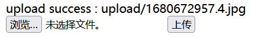
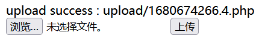

难度2
攻防世界
1.NewsCenter
sql注入
查库名，就一个news
1 | |
查表名
1 | |
得到news,secret_table
查secret_table
1 | |
得到id,fl4g，查询fl4g：
1 | |
2.upload1
直接上传shell.php
果然没这么简单，上传现成的图片马4.jpg（难度1中用过）

传了图片马之后，要想办法让它被解析，分布式配置文件依然被拦，想到难度1中用过.user.ini，再试一下
内容为：
1 | |
当我想用burp改包的时候，我发现已经被拦了，再一细看，上传按钮不能点，我立刻想到难度1不能按的按钮，果不其然，直接删掉disabled=””
ps:写到这不得不说一句，难度顺序排的是真好，前面刚做过这里就用上了。
依然是把内容类型改为image/jpg，上传成功。
但是名字被改了，.user.ini前面多了一串数字，显然失败了。早该想到的
高端的食材往往采用最朴素的烹饪方式，放大招：
直接上传4.jpg，burp改包，改成4.php，根据路径，蚁剑连接，getshell

最后成功找到flag
3.xff_referer
题目描述: X老师告诉小宁其实xff和referer是可以伪造的。
进入环境，页面有一句话：ip地址必须为123.123.123.123
xff：
很多HTTP代理会在HTTP协议头中添加X-Forwarded-For头，用来追踪请求的来源。
X-Forwarded-For的格式如下：
X-Forwarded-For: client1, proxy1, proxy2
X-Forwarded-For包含多个IP地址，每个值通过逗号+空格分开，最左边（client1）是最原始客户端的IP地址，如果有多层代理，每一层代理会将连接它的客户端IP追加在X-Forwarded-For右边。
一般的客户端发送HTTP请求没有X-Forwarded-For头的，当请求到达第一个代理服务器时，代理服务器会加上X-Forwarded-For请求头，并将值设为客户端的IP地址（也就是最左边第一个值），后面如果还有多个代理，会依次将IP追加到X-Forwarded-For头最右边，最终请求到达Web应用服务器，应用通过获取X-Forwarded-For头取左边第一个IP即为客户端真实IP。
但是如果客户端在发起请求时，请求头上带上一个伪造的X-Forwarded-For，由于后续每层代理只会追加而不会覆盖，那么最终到达应用服务器时，获取的左边第一个IP地址将会是客户端伪造的IP。伪造X-Forwarded-For头只需加上X-Forwarded-For头就可以
referer：
HTTP 请求的头信息里面，Referer 是一个常见字段，提供访问来源的信息。这个字段是可选的。客户端发送请求的时候，自主决定是否加上该字段。
以上摘自CSDN博主「Arik0」的文章
了解到以上知识后，我们就知道该怎么做了，burp抓包，提交：
1 | |
页面又提示必须来自https://www.google.com，该referer登场了：
1 | |
注意，这里的xff和referer要在请求头中
4.command_execution
题目描述: 小宁写了个ping功能,但没有写waf,X老师告诉她这是非常危险的，你知道为什么吗。
先学习一下，Windows或Linux下命令执行漏洞要用到的
| 分隔符 | 用法 | 解释 |
|---|---|---|
| ; | A;B | 先执行A，在执行B |
| & | A&B | 简单拼接，互不影响 |
| | | A|B | 显示B的执行结果 |
| && | A&&B | A执行成功才会执行B |
| || | A||B | A执行失败，然后才会执行B |
命令执行，想到命令行，dir行不通，就ls，可以得知是linux操作系统，这一点根据后门文件夹也能看出来
1 | |
查找文件名中含有flag的文件
1 | |
找到flag.txt，打开，拿到flag。（Windows的查看文件内容命令是type）
1 | |
5.web2
又是学习php的一题，上菜：
先时将flag字符串逆序，
然后每一个ascii码数值+1，
然后base64加密，
然后逆序，
然后再rot13加密
得到加密的密文：a1zLbgQsCESEIqRLwuQAyMwLyq2L5VwBxqGA3RQAyumZ0tmMvSGM2ZwB4tws
写个php就行了，结果如图：
ps：rot13加密和解密是同一个函数
6.Web_php_unserialize
1 | |
/[oc]:\d+:/i研究：
[OC]：匹配O或C
\d: 匹配一个数字字符。等价于 [0-9]。
+: 匹配前面的子表达式一次或多次。例如，’zo+’ 能匹配 “zo” 以及 “zoo”，但不能匹配 “z”。+ 等价于 {1,}。
/i: 表示匹配的时候不区分大小写。
preg_match(‘/^O:\d+/‘)匹配序列化字符串是否是对象字符串开头。
总的思路是，先base64编码一次，首先避开正则匹配，序列化后O:4刚好会被匹配，这里使用O:+4进行绕过。然后避开**_wakeup()函数，这里利用wakeup()的CVE-2016-7124**，当序列化字符串中的属性个数大于类中真实属性个数时，_wakeup()会跳过执行，以便读取fl4g.php。
这里还有一个点，类的私有成员序列化时会在类名和字段名上添加保护，格式为: \x00 + [私有成员所在类名] + \x00 [变量名]，前后均有空格
因此对于private属性在类名和字段名前均需要添加\0
当使用浏览器提交时需要在类名和字段名前添加%00
本题是get传参，故加%00
php在线编译：
1 | |
得到：
1 | |
传参即可